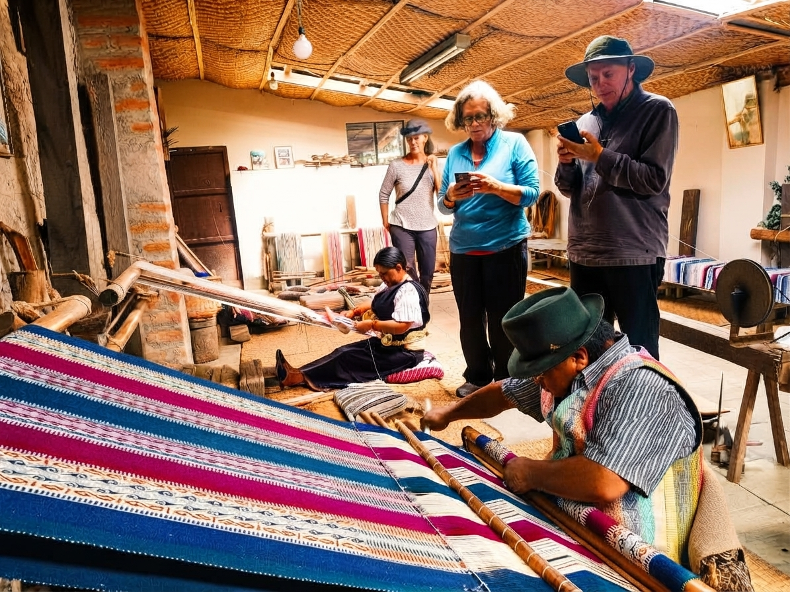
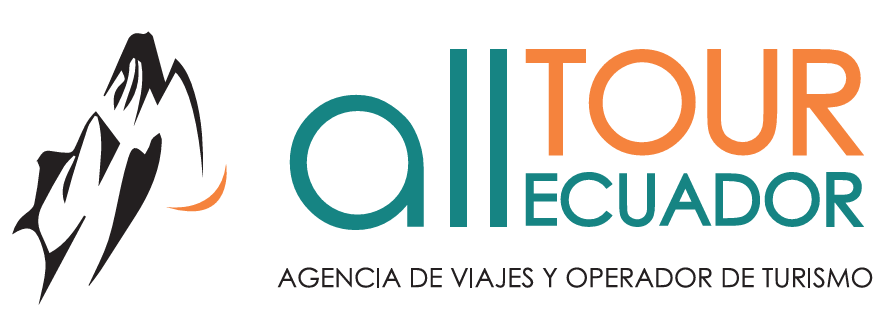
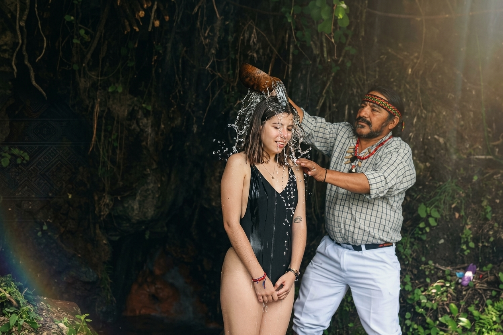
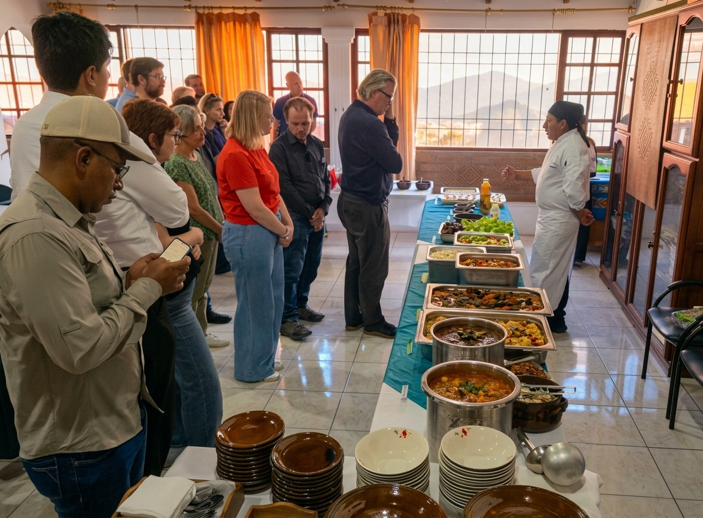
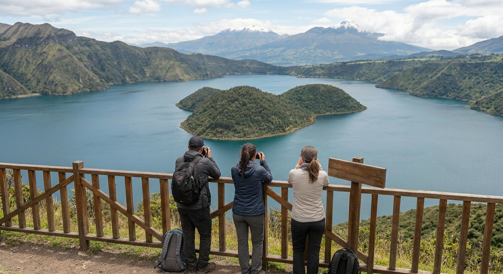
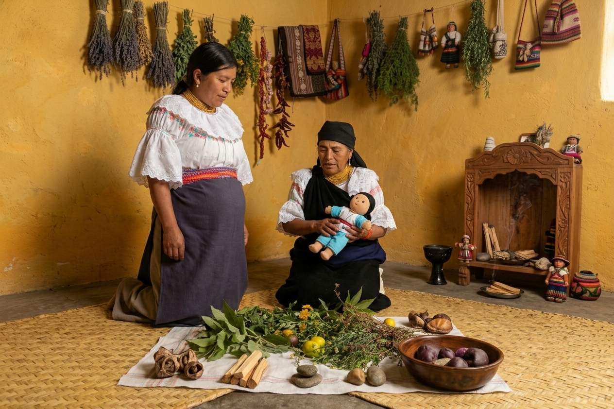
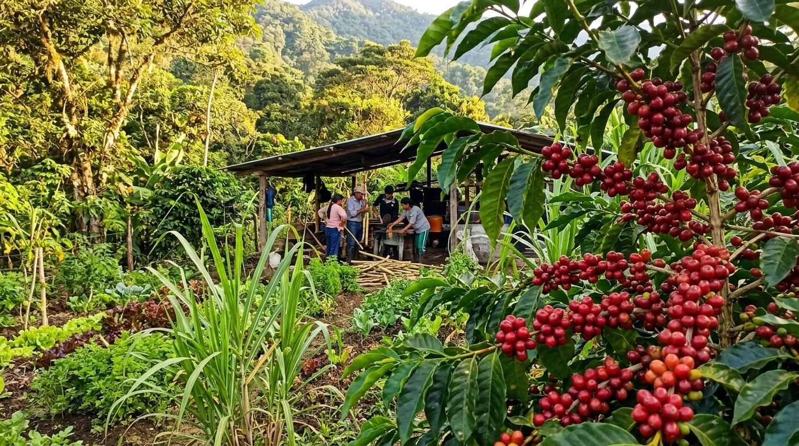
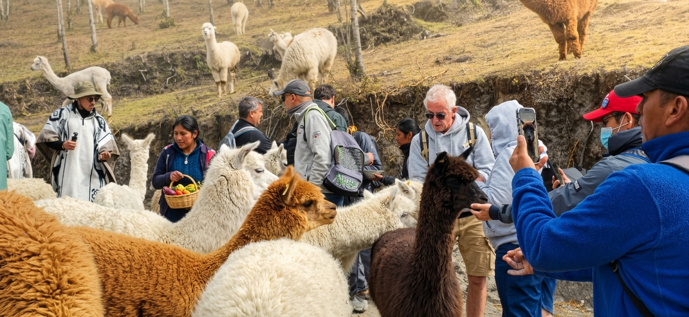

Full DayRaíces de Otavalo
"Meet the people, share the traditions, live the Andes."

Vive lo mejor de Ecuador con nuestros paquetes personalizados. Naturaleza, cultura, aventura y turismo vivencial Kichwa.
Todos nuestros paquetes incluyen guía nativo especializado, transporte y experiencias auténticas. Precios por persona con mínimo 4 pax.

Full Day"Meet the people, share the traditions, live the Andes."

Full Day"Taste the Andes, share the traditions, connect with Pachamama."

Full Day"Meet the women behind the living heritage of Cotacachi."

Trekking"Walk the volcanic landscape, discover Andean nature."

Vivencial"Where the land, women's hands and ancestral knowledge tell a story."

Aventura"Fly through the forest, taste the land, discover Intag."

Cultural"From the highlands to the hands that weave Andean identity."
"Meet the people, share the traditions, live the Andes." — Conoce a la gente, comparte las tradiciones, vive los Andes.
Invita al viajero a salir de los circuitos convencionales para entrar en la vida cotidiana de las familias Kichwa. A través de talleres prácticos con artesanos, músicos y familias locales (muchas de ellas impulsadas por mujeres emprendedoras), el visitante descubre una cultura viva que preserva su identidad, tradiciones y cosmovisión en cada tejido, sabor y melodía.
"Taste the Andes, share the traditions, connect with Pachamama." — Prueba los Andes, comparte las tradiciones, conéctate con la Pachamama.
Una experiencia de convivencia rural que entrelaza la tierra, la gastronomía, el arte y la espiritualidad Kichwa. El visitante trabaja el barro, cosecha en la chakra, participa en la preparación ritual de la Pachamanka, conoce la artesanía en semillas elaborada por mujeres locales y experimenta una conexión tranquila con la naturaleza en las vertientes sagradas.
"Meet the women behind the living heritage of Cotacachi." — Conoce a las mujeres detrás del patrimonio vivo de Cotacachi.
Este tour pone en valor el rol de la mujer Kichwa como guardiana de la cultura. A través de visitas a huertas agroecológicas, talleres de plantas medicinales, demostraciones textiles y espacios de conversación, el viajero comprende cómo los saberes ancestrales se adaptan y resisten en el mundo contemporáneo.
"Walk the volcanic landscape, discover Andean nature." — Camina el paisaje volcánico, descubre la naturaleza andina.
Recorrido de dificultad media a alta por los senderos de la Reserva Ecológica Cotacachi-Cayapas. El guía nativo interpreta el paisaje: formación del cráter, islas, aves andinas, plantas medicinales y relatos locales asociados a la laguna sagrada.
"Where the land, women's hands and ancestral knowledge tell a story." — Donde la tierra, las manos de las mujeres y los saberes ancestrales cuentan una historia.
El viajero participa en talleres prácticos sobre usos tradicionales de plantas medicinales y alimenticias, elaboración de tintes naturales y reconocimiento de semillas nativas. La experiencia combina caminata suave, conversación y trabajo manual en un entorno comunitario.
"Fly through the forest, taste the land, discover Intag." — Vuela sobre el bosque, saborea la tierra, descubre Intag.
El recorrido combina la visita a fincas cafetaleras con prácticas agroecológicas, un circuito de canopy entre árboles nativos y un recorrido por senderos de bosque nublado. Ideal para viajeros que buscan naturaleza, adrenalina moderada y contacto directo con productores locales.
"From the highlands to the hands that weave Andean identity." — Desde las alturas hasta las manos que tejen la identidad andina.
La experiencia acerca al viajero al ciclo completo del tejido andino: desde el pastoreo y esquila de alpacas y ovejas, hasta el hilado, los tintes naturales y el telar. Se visita una unidad productiva familiar y se participa en un taller textil guiado por artesanas locales.